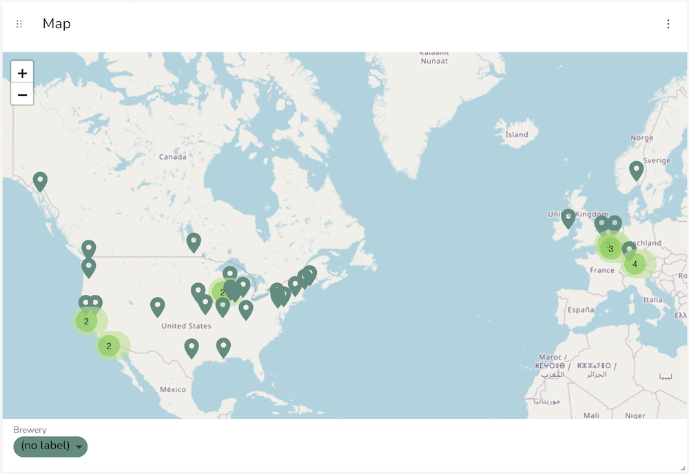
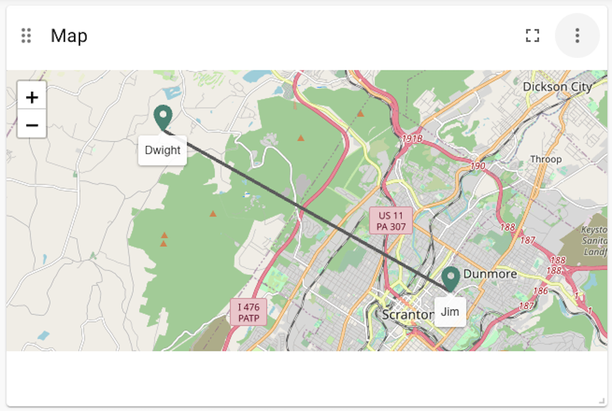

Map
|
This documentation pertains to the (legacy) unsupported version of NeoDash. For users of the supported NeoDash offering, refer to NeoDash commercial. |
The map report will render all returned nodes, relationships and paths on a geomap. Open Street Map is used to visualize the data on the map.
Map visualizations work best with Neo4j Spatial Data. Make sure that the nodes in your database have their locations stored as a spatial property.
Customizations are available to change several parts of the visualization, including the label for each node as well as the colors and sizes of the markers/lines. The nodes can also automatically cluster together and expand depending on the level of zoom. A heatmap mode is also available.
Examples
Nodes on a map
Note that the nodes returned here have spatial properties on them, so they can be visualized on a map.
MATCH (b:Brewery) RETURN b

Artificial map data
By returning a dictionary instead of a node directly, you can work around the visualization expecting nodes and relationships directly.
MATCH (l1:Location)<--(a:Person),
(a:Person)-[:KNOWS]-(b:Person),
(b:Person)-->(l2:Location)
RETURN {id: a.name, label: "Person", point: l1.point},
{id: b.name, label: "Person", point: l2.point},
{start: a.name, end: b.name, type: "KNOWS", id: 1}

Advanced Settings
| Name | Type | Default Value | Description |
|---|---|---|---|
Layer Type |
List |
markers |
Allows you to choose between the standard map with markers, or a heatmap. |
Cluster markers |
on/off |
off |
Whether to automatically cluster and expand the markers on the map. |
Node Color Scheme |
List |
neodash |
The color scheme to use for the node labels. Colors are assigned automatically (consequitevely) to the different labels returned by the Cypher query. |
Node Marker Size |
List |
large |
The size of the markers for the nodes on the map. One of [small, medium, large]. |
Node Color Property |
Text |
color |
Optionally, the name of the node property to map to the node color. This lets you define colors on a node-specific level, if you have a property that directly maps to the HTML color value. |
Relationship Color |
Text |
#a0a0a0 |
The color used for drawing the relationships on the map. |
Relationship Width |
Text |
1 |
The (default) width of the relationships on the map. |
Relationship Color Property |
Text |
color |
Optionally, the name of the relationship property to map to the relationship color. This lets you define colors on a relationship-specific level, if you have a property that directly maps to the HTML color value. |
Relationship Width Property |
Text |
width |
Optionally, the name of the relationship property to map to the arrow width. This lets you define widths on a relationship-specific level, if you have a property that directly maps to the width value. |
Map Provider URL |
Text |
When specified, overrides Open Street map provider with a custom map tiles provider. |
|
Intensity Property (for heatmap) |
Text |
intensity |
Optionally, and only for heatmaps, the node property to use as the intensity of that point on the heatmap. If left empty, all points will have the same intensity of 1. If one of the nodes in the results doesn’t have the specific property, its intensity will be set to 0. |
Hide Property Selection |
on/off |
off |
If enabled, hides the property selector (footer of the visualization). |
Auto-run query |
on/off |
on |
when activated automatically runs the query when the report is displayed. When set to `off', the query is displayed and will need to be executed manually. |
Report Description |
markdown text |
When specified, adds another button the report header that opens a pop-up. This pop-up contains the rendered markdown from this setting. |
{kind=link}
Rule-Based Styling
Using the Rule-Based Styling menu, the following style rules can be applied to the map:
-
The color of a node marker.